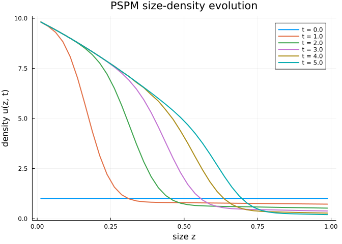
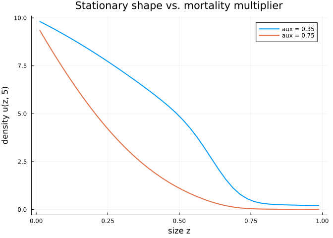

Physiologically-Structured Populations: Advection, Mortality, and Boundary Influx
Simon Frost
Overview
Classical IPMs model size transitions as a kernel $K(z', z)$ — the probability of finding a size-$z$ individual at size $z'$ one time step later. Physiologically-structured population models (PSPMs; de Roos 1997, Metz & Diekmann 1986) take a different view: individuals have a deterministic growth velocity $v(z)$, an instantaneous mortality $\mu(z)$, and reproduce by adding new individuals at a lower boundary $z_{\min}$. The resulting PDE $\partial_t u(z,t) + \partial_z \bigl(v(z)\,u(z,t)\bigr) = -\mu(z)\,u(z,t) + S(z,t),$ with boundary inflow $v(z_{\min})\,u(z_{\min},t) = B(t)$, describes continuously-ageing populations that cannot be captured by Kan-extended Markov kernels alone.
PSPMTarget is the categorical lowering target that routes a single-state LabelledProjectionNet through the PSPM discretisation in ContinuousStatePopulationDynamics.jl. Transitions are interpreted as separable operator contributions (velocity, mortality, source, boundary influx) that the extension additively combines into a PSPMIPMProblem.
This vignette closes the coverage gap for PSPMTarget.
Setup
using CategoricalPopulationDynamics
using ContinuousStatePopulationDynamics:
ContinuousIPMProblem, FixedMeshUpwind, PSPMIPMProblem, to_ode_problem
using OrdinaryDiffEq
using LinearAlgebra
using PlotsA daphnid-like size-structured population
We model a single size state :z on $[0,1]$ cm with three named transitions: deterministic somatic growth, size-dependent mortality, and an influx of neonates at the small boundary.
net = LabelledProjectionNet([:z],
:growth => (:z => :z),
:mortality => (:z => :z),
:birth => (:z => :z))
sname(net), tname(net)([:z], [:growth, :mortality, :birth])The transitions carry no numerical semantics yet — the net is a pure incidence structure. Semantics arrive through transition_data at lowering time.
Defining the PSPM target
domain = ContinuousProjectionDomain(0.0, 1.0, 40)
target = PSPMTarget(
:z => domain;
u0 = fill(1.0, 40),
aux0 = [0.35], # carries a mortality multiplier
tspan = (0.0, 5.0),
discretization = FixedMeshUpwind(),
)PSPMTarget{Vector{Float64}, Vector{Float64}, Float64, Nothing, FixedMeshUpwind}(Dict{Symbol, ContinuousProjectionDomain}(:z => ContinuousProjectionDomain{Float64}(0.0, 1.0, 40)), [1.0, 1.0, 1.0, 1.0, 1.0, 1.0, 1.0, 1.0, 1.0, 1.0 … 1.0, 1.0, 1.0, 1.0, 1.0, 1.0, 1.0, 1.0, 1.0, 1.0], [0.35], (0.0, 5.0), nothing, FixedMeshUpwind(), false)The aux0 slot holds non-density auxiliary variables (environmental covariates, scalar resources, etc.) that can appear in every operator closure. Here it scales the baseline mortality.
Transition operators
Each transition gets a NamedTuple of operator contributions. The extension combines them additively:
transition_data = Dict(
:growth => (velocity = z -> 0.2 .* (1.0 .- z),), # logistic-type growth
:mortality => (
mortality = (z, population, aux, p, t) -> aux[1] .* (1.0 .+ 0.5 .* z),
),
:birth => (
boundary_lower = (population, aux, p, t, d) -> 2.0,
source = 0.0,
),
)Dict{Symbol, NamedTuple} with 3 entries:
:growth => (velocity = #4,)
:birth => (boundary_lower = #8, source = 0.0)
:mortality => (mortality = #6,)velocity(z)yields a transport rate $v(z) = 0.2(1-z)$, so individuals approach — but never reach — the upper boundary.mortality(z, u, aux, p, t)is size- and aux-dependent.boundary_lower(u, aux, p, t, domain)is the prescribed neonate inflow at $z_{\min}$;sourceis a scalar (zero here) that can add inline recruitment throughout the domain.
Lowering
prob = lower(net, target, transition_data)
prob isa PSPMIPMProblem, prob.discretization isa FixedMeshUpwind, prob.aux0(true, true, [0.35])The returned object is a fully-assembled PSPM IPM problem. The categorical layer’s work is done — everything that follows lives in ContinuousStatePopulationDynamics.jl / OrdinaryDiffEq.jl.
Integrating the PDE
The extension also provides to_ode_problem, which writes the upwind-discretised PSPM as a standard ODEProblem. We integrate with Tsit5 and save on a coarse grid:
odeprob = to_ode_problem(prob)
sol = solve(odeprob, Tsit5(); saveat = 0.5)
sol.retcode, length(sol.t)(SciMLBase.ReturnCode.Success, 11)mesh = meshpoints(domain)
n_pop = length(mesh)
density(uvec) = uvec[1:n_pop]
plot(mesh, density(sol[1]);
label = "t = $(sol.t[1])", xlabel = "size z", ylabel = "density u(z, t)",
lw = 2, title = "PSPM size-density evolution")
for i in 3:2:length(sol.t)
plot!(mesh, density(sol[i]); label = "t = $(sol.t[i])", lw = 2)
end
plot!()
The boundary influx fills the low-$z$ end; advection pushes mass rightward; size-dependent mortality thins it.
Sensitivity through aux
Because the mortality multiplier lives in aux0, we can re-lower the same categorical net with a heavier mortality and compare without touching any operator definition:
target_high = PSPMTarget(
:z => domain;
u0 = fill(1.0, 40),
aux0 = [0.75], # doubled mortality
tspan = (0.0, 5.0),
discretization = FixedMeshUpwind(),
)
prob_high = lower(net, target_high, transition_data)
sol_high = solve(to_ode_problem(prob_high), Tsit5(); saveat = 0.5)
(sum(density(sol[end])), sum(density(sol_high[end]))) # total biomass at t = 5(179.89559978755298, 96.56553834733232)plot(mesh, density(sol[end]); label = "aux = 0.35", lw = 2)
plot!(mesh, density(sol_high[end]); label = "aux = 0.75", lw = 2,
xlabel = "size z", ylabel = "density u(z, 5)",
title = "Stationary shape vs. mortality multiplier")
Summary
| Construct | Role |
|---|---|
PSPMTarget(:z => domain; ...) | Lowering target for single-state PSPMs |
transition_data[:growth] | Named tuple carrying velocity |
transition_data[:mortality] | Named tuple carrying mortality |
transition_data[:birth] | Named tuple carrying boundary_lower, source |
lower(net, target, data) | Assembles PSPMIPMProblem additively |
PSPMTarget treats transitions as operator contributions, not as Markov kernels. The split between an incidence-only categorical specification and a semantics-carrying transition_data dictionary lets the same net drive the full family of size-structured continuous-time models — deterministic growth, inflow-driven reproduction, and non-trivial boundary physics — without leaving the library’s Kan-extension style.
References
- de Roos, A. M. (1997). A gentle introduction to physiologically structured population models. In Structured Population Models in Marine, Terrestrial and Freshwater Systems.
- Metz, J. A. J. and Diekmann, O. (1986). The Dynamics of Physiologically Structured Populations. Springer Lecture Notes in Biomathematics 68.